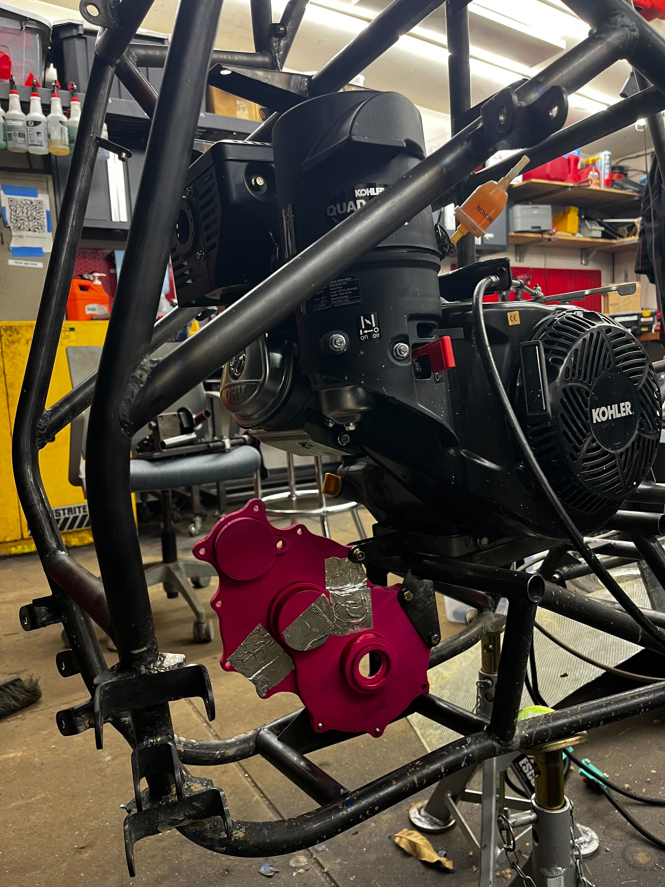

Two-Stage Reduction Gearbox
I took over as Powertrain Lead at the end of March with the car scheduled for testing in days. The previous team's gearbox design had to be abandoned due to incorrect geometry. A transfer case pulled from a prior-year car was used as a stopgap — and failed catastrophically at testing, with gear teeth shearing off the intermediate shaft. I designed a replacement gearbox from scratch in roughly two days, correctly sized the gears using Lewis equation analysis, fixed the chronic oil leak with a laser-cut Buna-N gasket, and personally milled the housing from 6061 aluminum. The gearbox ran through a full campus testing season without failure.

Background & Project Context
Baja SAE is a collegiate off-road racing competition organized by SAE International. Teams build a single-seat vehicle around a spec engine — a Kohler Courage 725, single-cylinder, 10 hp — and compete in events from a straight acceleration run to a 4-hour endurance race. The Stevens car competes as car #89.
The powertrain layout is: engine → CVT → reduction gearbox → rear axle. I joined the team as Powertrain Lead at the end of March 2026. Here is the project state I inherited:
Failure Analysis
The transfer case pulled from the previous-year car failed via complete gear tooth fracture on the intermediate shaft — a fast-fracture failure mode, meaning the material was loaded past its ultimate strength in a single event rather than fatiguing progressively. Teardown identified two compounding causes.
Undersized pinion gears. The transfer case used pinion gears of approximately 15–16 teeth — significantly smaller than the 19-tooth pinions in the redesign. At the same diametral pitch (10), a smaller tooth count has two compounding effects on bending stress. First, the pitch radius is smaller, so the same torque produces a larger tangential force on each tooth. Second, fewer teeth means a lower Lewis form factor Y, which represents higher stress concentration at the tooth root compared to a gear with more teeth. Both effects act in the same direction — directly increasing root stress — and they multiply.
σ = (Wt × P) / (F × Y)
Ratio of stresses (same torque): σ15T / σ19T = (r19 × Y19) / (r15 × Y15) = (0.950 × 0.314) / (0.750 × 0.276) = 0.2983 / 0.2070 = 1.44×
A 15-tooth pinion at this pitch sees ~44% higher bending stress than a 19-tooth pinion carrying the same torque.
Insufficient hardness and extended storage. The transfer case gears were heat treated to approximately HRC 40 — already marginal for this application — and had been sitting in storage for months before installation. Applied to the undersized 15-tooth geometry, Lewis analysis gives a factor of safety of approximately 0.4 under the worst-case static load. A gearbox operating at 40% of its required strength will survive in storage, but not under competition drivetrain loads.


Design Approach
With the car down and testing time already spent, the goal was to produce a correct, well-analyzed design quickly. I focused on three things: proper gear sizing via Lewis equation analysis, a material specification with adequate hardness, and fixing the oil leak that had plagued every previous gearbox on the car.
The abandoned previous design had taught one other lesson: verify center distances from the gear geometry, not from assumptions. For an involute spur gear mesh, the correct center distance is determined entirely by tooth count and diametral pitch:
Stage 1 (19T → 57T): C₁ = (19 + 57) / (2 × 10) = 3.800 in
Stage 2 (19T → 55T): C₂ = (19 + 55) / (2 × 10) = 3.700 in
These values were used to set the bearing bore locations in the housing model. Getting the center distance wrong forces gears off their pitch circles: too tight causes interference and elevated contact stress; too loose creates excessive backlash and impact loads each time a tooth pair comes into mesh. Both conditions accelerate failure.
Drivetrain & Load Analysis
Before sizing any gear, I mapped the full torque path to understand what the worst-case load actually is. The critical load condition is a full drivetrain stall: engine at peak torque, CVT at its most torque-biased ratio, and the wheels completely stationary with no slip. This produces the highest possible torque at every mesh point simultaneously.
Total gearbox reduction: 3.0 × (55/19) = 8.684:1. Total drivetrain at max CVT ratio: 3.38 × 8.684 = ~29.3:1. The Stage 2 input pinion carries the highest tangential force in the system — it sits on the intermediate shaft, which has already received the 3:1 Stage 1 multiplication, so its input torque is 9× engine torque. This is the gear the analysis is most conservative on.
Gear Stress Analysis — Lewis Equation
The Lewis equation treats a gear tooth as a cantilever beam loaded at the tip — a well-established conservative model for bending stress at the tooth root:
σ = (Wt × P) / (F × Y)
σ = root bending stress (psi) | Wt = tangential force (lb) | P = diametral pitch (teeth/in) | F = face width (in) | Y = Lewis form factor (tooth count & pressure angle)
All gears: diametral pitch 10, face width 0.375 in, 20° full-depth involute. Y = 0.314 for 19 teeth at 20° (standard Lewis table). Worst-case load at Stage 2 pinion under full stall:
rpinion = T1 / (2P) = 19 / 20 = 0.950 in
Wt = 2,251 / 0.950 = 2,369.6 lb
σ = (2,369.6 × 10) / (0.375 × 0.314) = 23,696 / 0.11775 = 201,236 psi
Allowable bending stress — 4140 HRC 50: 174,045 psi
Lewis FoS = 174,045 / 201,236 = 0.865
The FoS of 0.865 is calculated against the theoretical maximum load — a full drivetrain stall with the engine at peak torque and the CVT locked at its lowest ratio. In practice, this condition is never sustained: the CVT begins to upshift before stall, tire slip limits torque transfer to the axle, and the engine unloads before reaching peak torque at stall RPM. The real operating load on these gears is consistently lower than the stall case used for sizing. A FoS of ~0.87 against a load the car never actually reaches is a sound engineering margin for this application.
The Lewis equation is also inherently conservative — it assumes the full load applies at a single tooth tip and ignores load-sharing between adjacent teeth. Both factors mean actual gear root stresses in operation are lower than the Lewis number.
| Parameter | Old Transfer Case (Failed) | New Design |
|---|---|---|
| Pinion tooth count | ~15–16T (too small for DP 10) | 19T — proper minimum for DP 10 |
| Pinion pitch radius | 0.750–0.800 in | 0.950 in |
| Lewis form factor Y | ~0.276 (more stress concentration) | 0.314 |
| Gear material | 4140 Chromoly Steel | 4140 Chromoly Steel |
| Heat treatment | ~HRC 40 + months in storage | HRC 50 — freshly processed |
| Lewis FoS at stall | ~0.40 ← failed at testing | 0.865 — 2.16× improvement |
| Center distances | Unknown (previous year's car) | Derived from geometry: 3.800 in / 3.700 in |
| Oil seal | RTV silicone (leaked) | Laser-cut Buna-N gasket |
| Result | Catastrophic tooth fracture | Full testing season — no failures, no leaks |

Fixing the Oil Leak
The oil seal on every previous Stevens gearbox was RTV silicone — applied as a bead around the mating housing faces before assembly. RTV degrades with thermal cycling, and its compression varies with how it was applied that day. There is no way to get a consistent joint from a hand-applied bead. The result was a gearbox that reliably leaked.
The new design uses a Buna-N (nitrile rubber) gasket laser-cut from the same CAD file that defined the housing mating face. Every bolt hole is in the exact correct position. Nitrile is the standard material for oil seals — petroleum-resistant, elastically stable across operating temperature. Laser cutting produces a uniform, defined thickness at every bolt position. Compression is set by material spec and housing flatness, not by whoever assembled it that day. The same CAD file produces an identical replacement gasket on demand.

Material Selection
| Housing | 6061-T6 Aluminum, Type II anodized — The housing carries bearing loads and maintains shaft alignment; it is not part of the gear mesh. 6061 machines easily and is strong enough for the secondary structural loads here. I machined the housing myself on the shop's Haas knee mill. Anodized in the team's magenta color, which also builds a hard aluminum oxide layer for corrosion resistance. |
| Gears | 4140 Chromoly Steel — HRC 50, finish-ground after heat treatment — 4140 offers deep hardenability (through-hardens at these section sizes) and excellent toughness at high hardness. Specifying HRC 50 rather than the ~HRC 40 of the old transfer case moved the allowable bending stress from ~80,500 psi to 174,045 psi — more than doubling it. Gears were hobbed while soft, heat-treated, then finish-ground on the tooth flanks to restore accurate geometry. |
| Large gear lightweighting | Pocketed disc geometry — 47% rotational inertia reduction — Material was removed from the large gear faces in a symmetric pattern that maintains tooth root strength while cutting polar moment of inertia. Lower drivetrain inertia improves CVT shift response and reduces stored energy released into the drivetrain during impact. |
| Wheel hubs | Custom-machined 6061 aluminum — 47% inertia reduction — The wheel hub flanges were redesigned with material removed from non-load-bearing regions. Reducing unsprung rotational mass improves wheel response over obstacles and reduces gyroscopic loads on axle bearings. |
| Bearings | Deep groove ball bearings at each of the six shaft locations, sized for combined radial and thrust loads. The Stage 2 output bearing is most heavily loaded. |
| Gasket | Laser-cut Buna-N (nitrile rubber) — oil-resistant, thermally stable, repeatable. See Oil Seal section above. |
Prototyping & Fit Check
Before milling aluminum, I 3D-printed half of the housing shell to check how the case would mount to the car's frame. The prototype was specifically for verifying the mounting tab geometry and positional fit within the chassis — whether the tabs aligned with the correct frame nodes, whether the gearbox sat in the right position relative to the CVT output shaft and the axle, and whether there was clearance to surrounding structure. This kind of physical mock-up catches mounting problems that are easy to miss in CAD, especially when the frame model is assembled from multiple subteam files.

Machining & Manufacturing
I machined the 6061 housing myself on the shop's Haas knee mill. The critical operations were squaring and facing both halves to gasket flatness, boring the six bearing pockets to final diameter for concentricity, and drilling and tapping the twelve-bolt flange pattern. A boring head was used for the bearing pockets — pocket-to-pocket alignment sets the shaft center distances, so the concentricity here directly determines whether the gears mesh on their pitch circles.
The intermediate shaft was turned on a CNC lathe, with tight tolerances at the bearing journals and gear seat diameters. Gears were hobbed soft, heat-treated to HRC 50, then finish-ground on the tooth flanks to restore geometry. Final assembly: gears pressed and keyed onto shafts, shafts pressed into bearing bores, gasket installed, housing halves torqued down.


CAD Model
The gearbox was fully modeled before machining. The orthographic front view clarifies the three-shaft layout — input (top), intermediate (center), output (bottom) — and how the two gear pairs nest within the housing envelope.


(isometric view from chat)

(exploded view from chat)
Full Vehicle CAD Assembly
Beyond the gearbox, I assembled the complete vehicle CAD model by integrating individual models from every subgroup — frame, suspension, steering, brakes, and powertrain. Each team designed independently. Bringing those models into one assembly was necessary to verify fit across the whole car: gearbox mounting tabs against frame nodes, axle length relative to suspension geometry, CVT guard clearance to belt and frame tubes under full suspension travel, and drivetrain alignment from engine output to axle.
Problems found in the assembly model cost nothing to fix. Problems found on the physical car cost fabrication time the team doesn't have.

(car CAD front quarter from chat)

CVT Tuning & Performance Testing
The Comet 780 CVT's shifting behavior is tunable via two parameters: the primary flyweight mass (governs the RPM at which the belt begins to upshift) and the secondary spring rate (governs back-torque required to upshift and belt tension at steady state). Getting this wrong means either bogging under load (too-early upshift) or overshooting peak power RPM (too-late). Seven configuration sessions were run over a measured 40 ft course.
| Test | Primary | Secondary spring | Position | Avg speed |
|---|---|---|---|---|
| 1st | Stock balls | Yellow | 1 tick, spot 2 | ~16.3 mph |
| 2nd ★ | Stock balls | Red (stiff) | 1 tick, spot 2 | 21.3 avg / 22.4 peak |
| 3rd | Blue/gold rollers | Green (soft) | 1 tick, spot 2 | ~12.5 mph |
| 4th | Blue/gold rollers | Green (soft) | Clean sheaves | ~12.2 mph |
| 5th | Blue/gold rollers | Green (soft) | 1 tick, spot 1 | ~12.7 mph |
| 6th | Blue/green rollers | Red (stiff) | 1 tick, spot 1 | ~16.3 mph |
| 7th | Blue/green rollers | Red (stiff) | 1 tick, spot 1 | ~16.9 mph |
Red secondary spring with stock flyweights at spot 2 won decisively — 22.4 mph over 40 ft versus ~12.5 mph for the softest configuration, nearly a 2× spread from the same engine and gearbox. A stiffer secondary spring maintains higher belt clamping force during acceleration, preventing slip and holding the CVT in a lower ratio longer — keeping the engine near peak torque output. Blue/gold rollers underperformed across all secondary configurations, indicating their mass causes the CVT to upshift prematurely before peak power RPM is reached.
Results
The gearbox ran through a full campus testing season without mechanical failure, oil leaks, or any sign of tooth distress. Post-test inspection confirmed normal contact patterns on the gear flanks. It was the first gearbox on this car to leave a testing session without leaking oil.
The complete design record — Lewis equation analysis, gear geometry, center distance derivation, material specification, CVT tuning data — has been documented for future powertrain leads.
Car #89 is entered in Baja SAE competition, June 10–14, 2026.



Key Specifications
| Gearbox type | Two-stage spur gear reduction |
| Stage 1 | 3.000:1 — 19T → 57T, center distance 3.800 in |
| Stage 2 | 2.895:1 — 19T → 55T, center distance 3.700 in |
| Total gearbox reduction | 8.684:1 |
| CVT | Comet 780 — max torque ratio 3.38:1 |
| Total drivetrain reduction | ~29.3:1 at peak torque CVT setting |
| Engine peak torque | 18.5 ft·lb (222 in·lb) — Kohler Courage 725 |
| Stage 2 pinion Wt (stall) | 2,369.6 lb |
| Lewis bending stress | 201,236 psi (Stage 2 pinion, full stall) |
| Diametral pitch | 10 |
| Pressure angle | 20° full-depth involute |
| Face width | 0.375 in |
| Gear material | 4140 Chromoly Steel, HRC 50 |
| Lewis FoS — old transfer case | ~0.40 (15–16T pinions, HRC 40) |
| Lewis FoS — new design | 0.865 at full stall (2.16× improvement) |
| Large gear inertia reduction | 47% (lightweighted pocketed geometry) |
| Hub inertia reduction | 47% (redesigned wheel hubs) |
| Housing | 6061-T6 Aluminum, Type II anodized magenta |
| Oil seal | Laser-cut Buna-N (nitrile) gasket |
| Best CVT test speed | 22.4 mph over 40 ft (red springs, stock flyweights) |
| Design time | ~2 days from failure to complete design |
| Status | Tested — Baja SAE competition June 2026 |